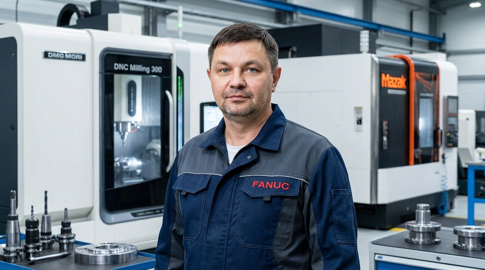

Владимир
Автор курса, наладчик станков с ЧПУ
Этот курс не про «сухое чтение мануалов». Это выжимка многолетнего опыта работы с Fanuc 0i-TF. Моя цель — чтобы вы чувствовали себя у станка хозяином, а не гостем.
Смотреть бесплатные уроки на YouTubeПривет! Я Владимир. Расскажу немного о том, как я пришел в мир ЧПУ.
Всё началось в моём родном Кургане. По образованию я железнодорожник — окончил наш техникум (теперь это Уральский железнодорожный институт), но судьба распорядилась иначе. По специальности я не проработал ни дня, потому что жизнь сразу привела меня туда, где пахнет стружкой и маслом — на завод.
С 2004 года началась моя настоящая «школа жизни». Я не прыгнул сразу за компьютер в чистое кресло. Начинал с самых низов, учеником сверловщика. Потом был фрезерный, потом серьёзная работа на координатно-расточном станке. Но настоящую закалку я получил на «универсалах». Если вы знаете, что такое 1К62, 16К20, или «монстры» вроде ДИП 300 и ДИП 500, то понимаете, о чём я. Это те станки, которые учат чувствовать металл руками.
В 2014 году в моей карьере случился поворот — я перешёл на ЧПУ. Моим первым «цифровым» станком стал продольный автомат на стойке Mitsubishi. Это был вызов: после механики пересесть за программирование. Но затянуло быстро. С тех пор я успел поработать практически со всем «золотым фондом» систем: Fanuc, Siemens, Haas, Mazak.
География и заводы
Меня никогда не пугала тяжёлая работа или дальние поездки. За спиной — крупнейшие предприятия страны. Я работал на «Курганстальмосте», «Курганприборе», заводе «Регион-45». Был серьёзный опыт в ОДК-УМПО — это авиационные двигатели и оборонка, там цена ошибки и требования к точности запредельные.
А дальше пошли вахты. Я объездил полстраны: Нижневартовск (Герс Инжиниринг) — буровые колонны для геофизики; Тверь, Новый Уренгой, Екатеринбург; проекты в Санкт-Петербурге, Казани и Уфе.
Где я сейчас?
Сегодня я наладчик ЧПУ 5-го разряда и технолог-программист. Работаю на предприятии в Санкт-Петербурге. За 20 лет в производстве я накопил столько опыта, что держать его в себе стало тесно.
В январе 2023 года я завёл свой YouTube-канал, где делюсь тонкостями программирования Fanuc. Я прошёл путь от простого сверловщика до человека, который пишет сложные программы для авиапрома — и на этом сайте я хочу помочь вам сократить этот путь и избежать тех ошибок, которые когда-то совершал сам.
Мастерство не сертифицируется — оно передаётся!